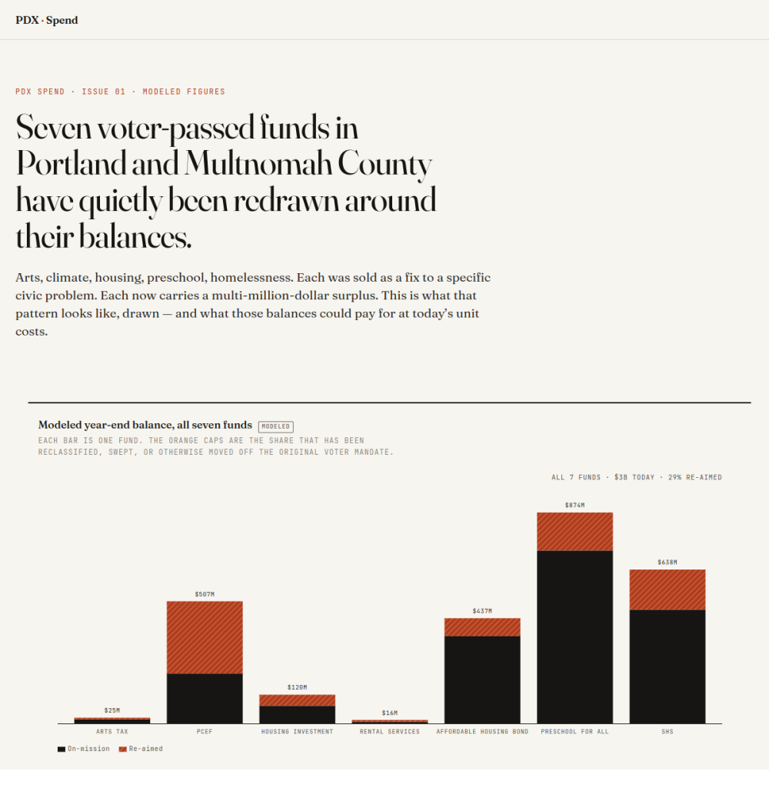

PDX Spend
A single-issue civic-data instrument. A fund-by-fund ledger of what Portland-area voter money could pay for — and the named rules that hold it still.

Premise & motivation
Portland-area voters keep approving ballot measures that dedicate public money to specific things — clean energy, parks, housing, preschool. Years later, much of that money is still sitting in the fund, or has been quietly re-aimed at uses outside what voters approved, through ordinary administrative readings of statute. The information needed to contest that exists, buried in audits, ordinances, and budget PDFs that assume a public-finance background.
PDX Spend is a tool for closing that gap. For each of seven funds it answers three questions a resident can act on the same day:
- What could this fund pay for right now, at its current balance?
- What’s the specific rule blocking that?
- Who controls that lever — so you can send them the page?
The site argues a side. When a bureau uses an elastic reading of statute to spend restricted dollars on, say, a private arena’s lighting, the site applies the same elasticity in the other direction — toward what voters actually passed — and names the trade. Every blocker ships with a defense (the line usually offered for it) and a rebuttal (the editorial counter).
Design
Plain-language baseline
Every page follows plainlanguage.gov standards: common words (“money sitting unspent” over “unobligated reserve”), a 25-word sentence cap, active voice, numbers stated before the explanation, headings that assert something usable. Hero copy targets a 6th-grade reading level.
Chart-led longform
Editorial reference points are The Pudding (chart-driven storytelling), the Financial Times visual desk (restraint, chart language), and ProPublica / Reveal (structural framing of public-money stories).
Scrollytelling
Fund pages walk the reader through how a balance got to where it is — the balance line stays pinned while annotated audit and council events step past in the margin, the active step lifting out of a faded stack as it reaches the viewport center.
Modeled figures are labeled
Every figure is a modeled reconstruction until audited records replace it. Charts carry a small MODELED badge as the disclosure mechanism. As audited documents arrive, the modeled series swap out and the badge drops.
Editorial palette and type
Fraunces + JetBrains Mono, with a burnt-sienna accent reserved for the “re-aimed” dollars so the eye lands on the contested money.
Technical implementation
- SvelteKit 2 + Svelte 5 runes, fully prerendered via
@sveltejs/adapter-static, deployed as static files to Netlify. - D3 v7 + scrollama for the charts and scrollytelling. Each chart is a hand-built SVG component (balance-over-time, promised-vs-delivered, unspent-reserve stream, drift-from-intent, and a cross-fund stacked view with dollars / share / on-mission modes).
- Accessible charts. Every chart exposes a keyboard-navigable data layer (per-point focus, arrow / Home / End / Escape), an
aria-liveregion announcing the selected point, color-blind-safe pattern fills doubling every color encoding, and a<details>data table mirroring the SVG. - Charts travel. Every chart downloads as PNG and CSV. The dashboard charts are embeddable via an oEmbed endpoint that carries the credit line through wherever they’re embedded, so other reporting can lift the charts.
- Resilient build. The
@workspace/dbimport is dynamic so a static build withDATABASE_URLunset still succeeds (run-history queries return empty). Per-fund memos are authored as markdown and pulled in at build time viaimport.meta.glob.